Galería de Panajachel
 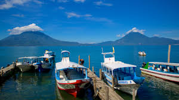
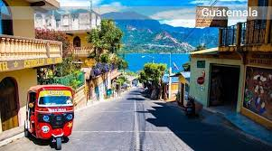
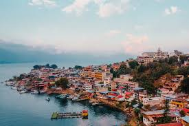
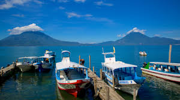
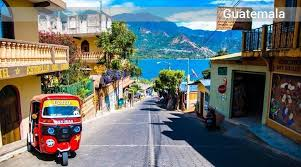
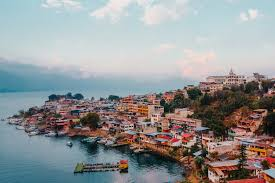
 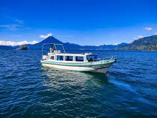
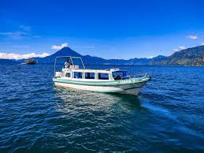
 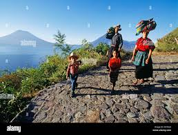
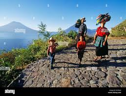

Panajachel, también conocido como Pana, es una ciudad encantadora situada a la orilla del Lago de Atitlán, en el departamento de Sololá. El ambiente es impresionante por su belleza y la gente que es muy cordial. Por su clima y tranquilidad lo hace un sitio perfecto para relajarse. Cuenta con reservas naturales, diversidad de restaurantes, vida nocturna, mercado de artesanías y escuelas de español.
Panajachel ofrece una vista espectacular de los volcanes de San Pedro, Tolimán y Atitlán. Es punto de partida, mediante el servicio de lancha, para visitar diferentes municipios de Santiago Atitlán, San Lucas Tolimán, San Antonio Palopó, Santa Catarina Palopó, San Pedro La Laguna, entre otros. Muchos de los habitantes de estos pueblos son descendientes de los grupos cakchiqueles y tzutuhiles.
Entre otros puntos de interés en Panajachel está la Calle Santander, que se ha convertido en un punto de referencia donde se puede encontrar variedad de artesanías, restaurantes, hoteles, y otros servicios que hacen del destino una experiencia placentera. Tampoco se puede perder la Iglesia de San Francisco, la cual muestra la riqueza de la imaginería; el mercado local, donde los pobladores venden sus productos agrícolas; y los museos y reservas naturales.
Ubicado en el Suroeste del Altiplano guatemalteco, Panajachel es accesible en bus or en carro atravesando la carretera Panamericana en dirección a Sololá. Una ruta alterna es la Ruta del Paisaje, este camino es muy panorámico y de hecho más corto, pero es difícil debido a las condiciones de la carretera. Panajachel está ubicado a 104 km / 65 mi de Antigua y alrededor de 138 km / 86 mi del Aeropuerto Internacional La Aurora, en la Ciudad de Guatemala.
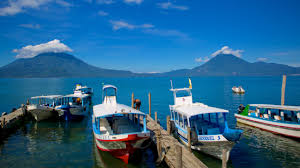
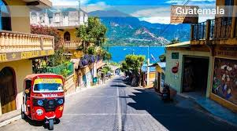
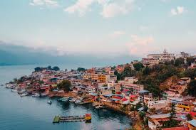
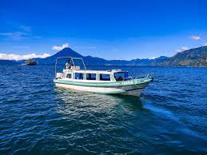
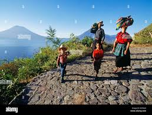
| Fecha | Hora | actividades | Lugar |
|---|---|---|---|
| Dia 1 | 8:00 am | LLegada a Panajachel | Entrada de Panajachel |
| 10:00 am | Tour en barco en lago | Embarcadero de Panajachel | |
| 13:30 pm | Almuerzo en restaurante local | Restaurante el patio | |
| 12:30 pm | Visita al pueblo san juan la laguna | San juan la laguna | |
| 13:30 pm | Almuerzo en restaurante local | Restaurante el patio | |
| 15:30 pm | Regreso a panajachel y paseo por mercado | Mercado de panajachel | |
| 17:30 pm | Tiempo libre explorar y comprar | Centro de panajachel | |
| 21:00 pm | Regreso a hotel y descanso | Calle santander, panajachel | |
| Dia 2 | 8:00 am | Desayuno en hotel | "Hotel posada de los volcanes" |
| 10:00 am | Excursión al mirador san Jorge | Mirador de san jorge | |
| 13:30 am | Almuerzo en restaurante con vista al lago | Restaurante "La Casa de Don David" | |
| 15:00 am | Salida a ciudad Guatemala | Salida de Panajachel |